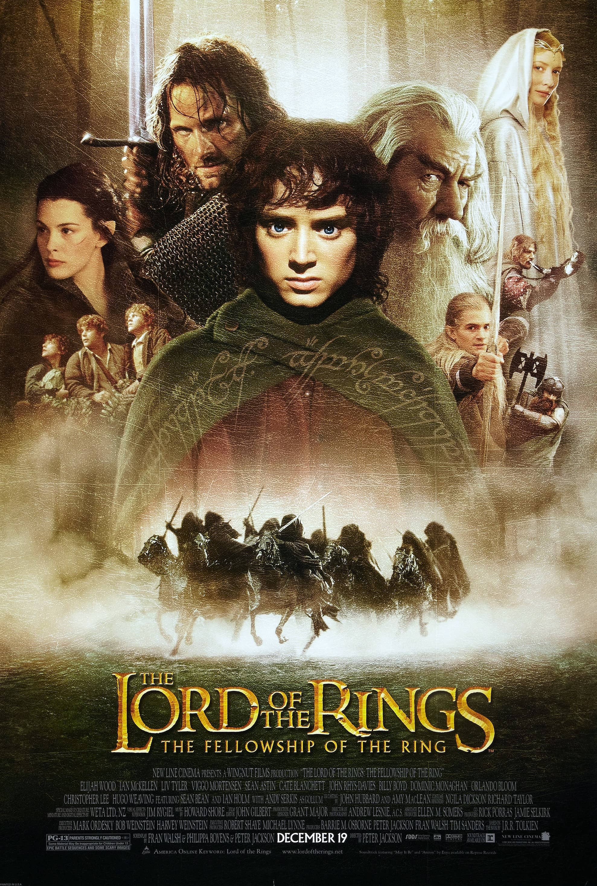

Merhaba ben Oğuz Can, İstanbul'da yaşıyorum, 28 yaşındayım. Front End Developerım. Kendimi geliştirmeyi severim.
Hobilerim
Fantastik ve bilim kurgu eserleri izlemeyi ve okumayı çok severim. J.R.R Tolkien'in yüzüklerin efendisi 3'lemesini televizyonda izledikten sonra çok sevdim. Devamında kitaplarını da okudum, tam bir Orta Dünya hayranıyım diyebilirim.

Yüzüklerin Efendisi (İng. The Lord of the Rings), İngiliz filolojist ve Oxford Üniversitesi profesörü J. R. R. Tolkien'in yazdığı epik fantezi türündeki romandır. Hikâye, Tolkien'in çocuklar için yazdığı 1937 tarihli Hobbit'in devamı olarak başlamıştı ancak sonunda ondan çok daha büyük bir eser haline geldi. Çoğu II. Dünya Savaşı'nda olmak üzere 1937 ve 1949 yılları arasında aşamalar halinde yazıldı. 150 milyonun üstündeki satış sayısıyla tüm zamanların en çok satan ikinci romanıdır.